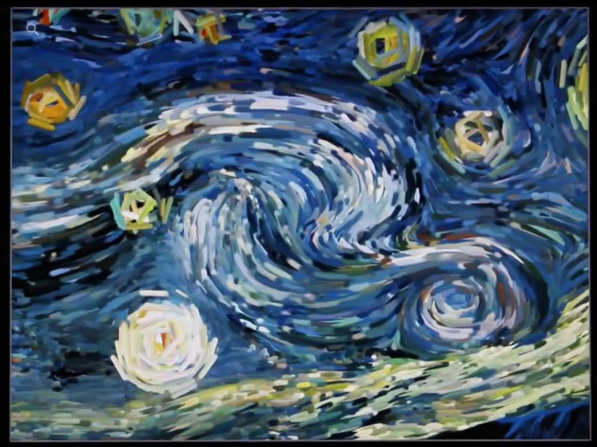
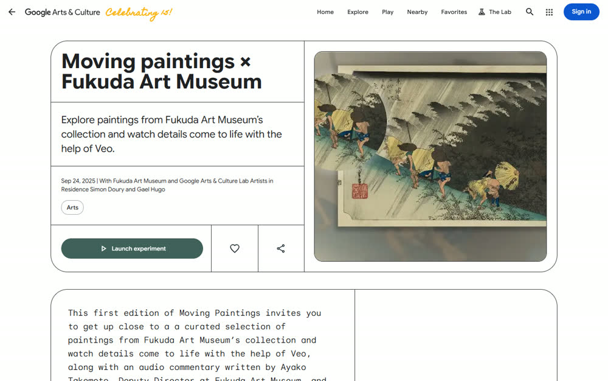

Полотно, которое живёт
Одна большая картина долины, написанная как полотно эпохи Голицына, которая живёт: движется свет и воздух, море дышит, а сама картина — карта сайта.
Гость видит полотно во весь экран. Через секунду замечает, что облака идут и по воде бежит блик. Курсор чуть поворачивает воздух в картине. Ни одной надписи, кроме имени дома.
Картина → «одна долина, 1888» одной фразой → четыре линейки как четыре фрагмента того же полотна → подвалы и приглашение на экскурсию с одной кнопкой → тихий подвал страницы с тремя новостями.
Полотно пишется с натуры маршрута экскурсии: ворота, дом, четыре подвала, терраса с видом на Меганом. Гость, который был у вас, узнаёт место; гость, который придёт, узнает картину.
- Картина, написанная для дома. Мы предлагаем заказать настоящее полотно крымскому художнику и оживить его цифровую копию: оригинал вешается в дегустационном зале, и сайт с экскурсией становятся клонами буквально.
- Движение: либо авторское поле течения по мазкам картины (как у Vrellis), либо короткие видео-петли, сделанные по картине под контролем художника (как у Google и музея Фукуда).
Всё держится на качестве одной картины и её движения. Наши пробы показали: движение обязано быть медленным и цельным, любые мелкие частицы читаются как рябь.

